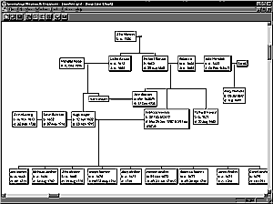

| ||
|  | ||
|
You've never seen a genealogy program do THIS before!
Genealogy Research Organizer is a program for
Windows 98 that lets you manage your genealogy data.
Even complex family relationships become instantly clear, with GRO's intuitive drop-line chart.
You can arrange your ancestors as you desire, and GRO automatically
draws the lines between individuals representing their relationship.
Just double-click an individual
to see all of his or her events, attributes, partners, and children.
| ||
|
| ||
| © Copyright 2001, Christopher A. Mosher, Shelton, CT, USA | ||